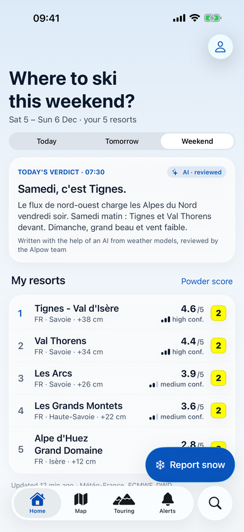
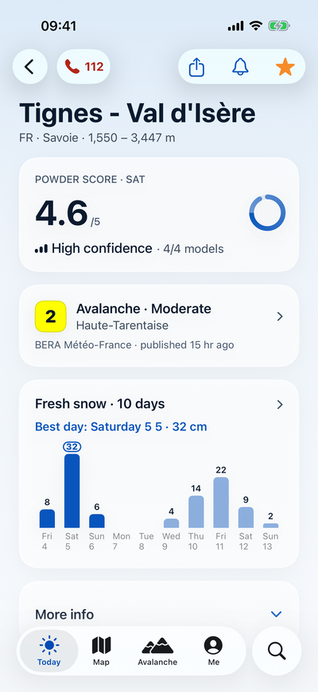
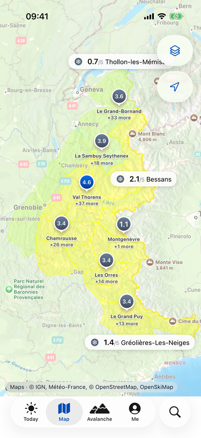
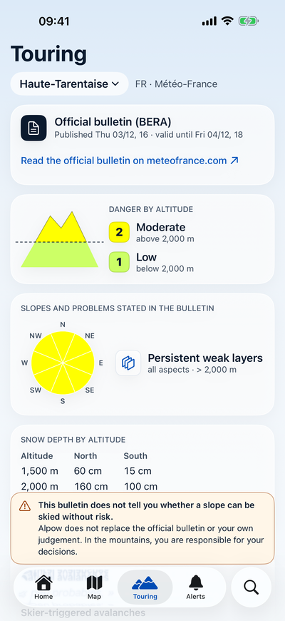
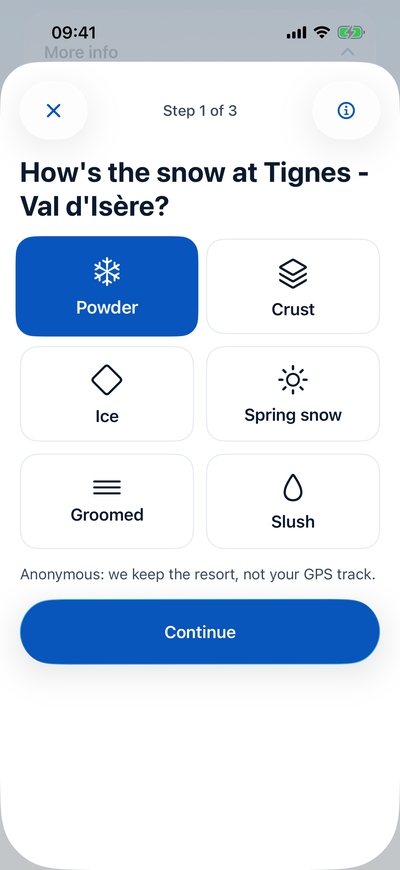
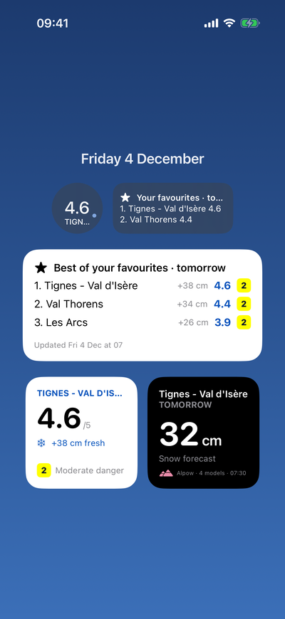

Video
Alpow in 30 seconds
From the weekend ranking to the avalanche bulletin, via the map and a snow report: the app as it is, filmed on iPhone with example data.
Alps and Pyrenees · iPhone
Powder forecast resort by resort, the official avalanche bulletin, and what skiers on the slopes are saying.

Free at launch · Avalanche bulletin always free



Video
From the weekend ranking to the avalanche bulletin, via the map and a snow report: the app as it is, filmed on iPhone with example data.
Powder score
For every resort, Alpow combines four weather models: Météo-France AROME and ARPEGE, ECMWF IFS and DWD ICON. When they agree, confidence goes up. When they disagree, the app tells you.
Weekend
Your resorts ranked by powder score, and a three-sentence verdict. Drafted with the help of an AI, reviewed by the Alpow team, and always labelled as such.
Map
The powder score for each resort, the avalanche danger for each massif and, as you zoom in, slopes steeper than 30° and the resort's pistes.
Avalanche · BERA Always free
Danger by altitude, aspect rose, avalanche problems: shown the way Météo-France publishes them, with a link to the source. The bulletin text is never summarised by an AI.
This bulletin does not tell you whether a slope can be skied without risk.Alpow does not replace the official bulletin or your own judgement. In the mountains, you are responsible for your decisions.

Snow reports
Powder, crust, ice, spring snow, groomed: tags rather than free text, so every skier reads them in their own language. The "verified on site" badge confirms you were in the ski area, without sending your GPS track.

Widgets and alerts
The powder score on your Lock Screen, tomorrow's ranking on your Home Screen, and an alert when snow is on its way to your resorts.

Guides
What the official bulletin says, what the notifications do, and what Alpow shows for ski touring.
Trust
Every forecast shows when it was updated and where it comes from. The avalanche bulletin is shown as published, with its credits.
Resorts
Expected snow, Powder score and day-by-day forecast, with the date and source of every forecast.
FAQ
On the App Store, for iPhone.
Yes, Alpow is free at launch. The avalanche bulletin will always be free, for everyone.
No. Alpow is built for iPhone, with its widgets and alerts. No Android version is planned.
Not yet. Alpow covers French resorts in the Alps and the Pyrenees, with Météo-France bulletins.
No. Alpow shows the official bulletin as published and links to its source. It never tells you whether a slope can be skied without risk: the decision on the mountain is yours.
It opens the Emergency page, one tap from the top of the app's screens: a button to call 112, your GPS coordinates and altitude to read to rescuers, what to say on the phone, the avalanche rescue steps with their sources, and nearby rescue numbers. Alpow never calls without your tap.
It stays on your iPhone: resorts near you, your dot on the map, checking that a snow report comes from the ski area, a ski day's summary and, on the Emergency page, your coordinates to read to rescuers. The server only receives a report's resort and time, never your coordinates.